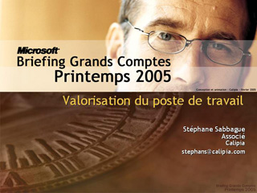
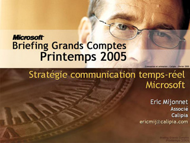

(Unknown Title)
Speaker(s):
Windows Server
Speaker(s): Pierre Bugnon, Stéphane Sabbague
Applications d'infrastructures
Speaker(s): Pascal Paré
Infrastructure Information Workers
Speaker(s): Eric Mijonnet
Microsoft Business Solutions
Speaker(s): Pascal Paré
Valorisation du Poste de Travail

Speaker(s): Stéphane Sabbague
Stratégie Communication Temps-réel Microsoft

Speaker(s): Eric Mijonnet
Spyware et logiciels espions, comment se protéger ?
Speaker(s): Pascal Paré
Outils d'aide à la Migration vers Windows Server 2003
Speaker(s): Pierre Bugnon, Stéphane Sabbague
SQL Server 2005 et XML
Speaker(s): Pascal Paré
Déploiement des Postes de Travail avec « Zero Touch »
Speaker(s): Pierre Bugnon, Stéphane Sabbague
Évolutions de Windows Server 2003
Speaker(s): Pierre Bugnon, Stéphane Sabbague